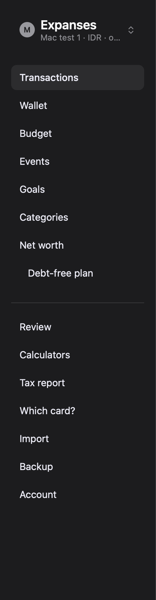

Every page that exists today is placed in each option — nothing removed. Invented household. On the Mac, Settings (Categories, Backup, Sharing, Capture, Account) belongs in its own window opened from the menu bar (cicis › Settings…, ⌘,) — that is how Mac apps do it.
TODAYReal Mac copy
Pages in a flat list, then a second list of tools mixed with Backup and Account. Debt-free plan indented under Net worth. No accounts, no counts.

AGrouped by job
Three short groups (everyday, money you have, plans), then your accounts with balances. Tools and Settings at the bottom. Review shows a count when something waits.
BSame as the iPhone
The iPhone's four tabs as the four pages (Cashflow, Spending, Wallet, Account), then accounts. Everything else is reached inside those pages, exactly as on the phone. Shortest list.
CFavourites first (like Mail)
A short Favourites group you choose (drag pages in or out), then everything else under "All pages", folded. Accounts below. Tidy for daily use, nothing hidden for good.
Tools ›
cicis › Settings… (⌘,)
Inside the pages